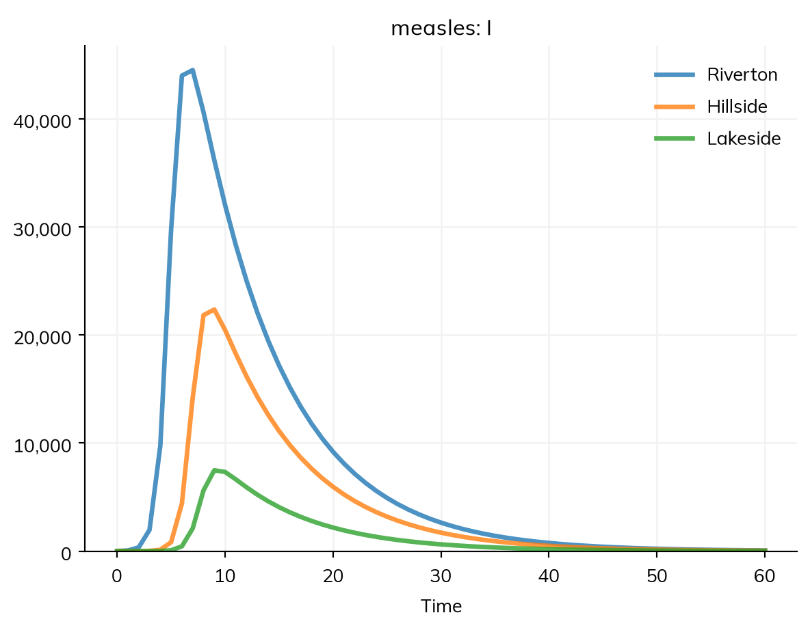

An outbreak in one town reaches the next through the people who travel between them. In Starsim, places are a stratification of the model (a spatial one, with each place a level), and movement between them is optional: without it, each place has its own epidemic, and with it, infection passes from place to place. This is the metapopulation model, with each place a subpopulation that mixes within itself and is linked to the others by movement. It works the same under compartments and agents. The tutorial T6 – Geography and mixing builds up a model of several towns step by step; this page is for looking things up. The data on places that comes with Starsim is on Population data.
Towns linked by commuting
A geography (ss.geo.geography) is a set of named places, with the population of each and where they are. Stratifying a disease by it (stratify(patch=towns)) makes a copy of each state for each place, and mobility= says how people move between them. Here are three towns of measles: Riverton, with 60,000 people, Hillside (30,000) 20 km away, and Lakeside (10,000) 50 km away, with 10 infectious people in Riverton at the start. People spend 0.1% of their time in the other towns, split between them by a gravity model (more to bigger and nearer towns):
import starsim as sstowns = ss.geo.geography( names = ['Riverton', 'Hillside', 'Lakeside'], pop = [60_000, 30_000, 10_000], x = [0, 20, 50], # Positions in km y = [0, 0, 10],)S, I, R = ss.states('S I R')infection = S >> I @1.9*I # β = 1.9 per dayrecovery = I >> R @ ss.days(8) # Infectious for 8 days on averagemeasles = ss.Disease(infection, recovery, init_n=dict(I=ss.by(patch=[10, 0, 0]))) # 10 infectious people in Rivertonmeasles.stratify(patch=towns, mobility=ss.geo.gravity(away=0.001))sim = ss.Sim(measles, stop=ss.days(60))sim.run()sim.results.measles.I.by('patch').plot()
Sim: measles, 100,000 people, as an ODE, days 0 to 60
measles: R0 = 15.2, with 10 infectious at the start
Done in 0.0059 s; measles: 99,990 infections; at most 68,064 infectious, on day 8

The sim takes its population (100,000) from the geography. Each town has its own epidemic, a few days after the one before: Hillside, which is bigger and nearer, before Lakeside. Without mobility=, people mix only within their own town, and the outbreak stays in Riverton:
isolated = ss.Disease(infection, recovery, init_n=dict(I=ss.by(patch=[10, 0, 0])), name='measles')isolated.stratify(patch=towns) # The same towns, with no movement between themno_movement = ss.Sim(isolated, stop=ss.days(60), verbose=0)no_movement.run()print('Infections with movement:')print(sim.results.measles.infection.by('patch').summarize().round())print('Infections without movement:')print(no_movement.results.measles.infection.by('patch').summarize().round())
Even 0.1% of people’s time spent away is enough to carry measles, with an R0 of 15, to every town; a disease with a lower R0 needs more movement to spread, and arrives later.
Geographies
A geography can be given by hand, read from a file, or looked up by country:
ss.geo.geography(names=['a', 'b'], pop=[10_000, 20_000], x=[0, 30], y=[0, 0]) # Positions in any unit of distancess.geo.geography(names=['a', 'b'], pop=[10_000, 20_000], lat=[-1.3, -0.1], lon=[36.8, 34.8]) # Latitudes and longitudes; distances in kmss.geo.geography(names=['a', 'b'], pop=[10_000, 20_000], distances=[[0, 30], [30, 0]]) # Distances directlyss.geo.geography('districts.csv') # A table with columns name, pop, and x and y (or lat and lon)ss.geo.geography('districts.shp') # Shapes (.shp, .geojson, or .gpkg, read with geopandas); each place at the center of its shapess.geo.geography('Kenya', level=1) # Kenya's 47 counties, with populations and positionsss.geo.geography('Kenya', level=1, places=['Nairobi', 'Kiambu']) # Some of themss.geo.geography(['Kenya', 'Uganda'], level=1) # Several countries, with places named e.g. 'Kenya:Busia'
A country’s administrative units come from starsim_data: level 1 is its counties, provinces, or states, and level 2 the units below them. The first two levels of every country are bundled, so they need no download. Here measles starts in Nairobi and spreads across Kenya’s counties:
kenya = ss.geo.geography('Kenya', level=1)measles_kenya = ss.Disease(infection, recovery, init_n=dict(I=ss.by(patch={'Nairobi': 10}))) # 10 infectious people in Nairobi, and none in the other 46 countiesmeasles_kenya.stratify(patch=kenya, mobility=ss.geo.gravity(away=0.001))sim = ss.Sim(measles_kenya, stop=ss.days(60), verbose=0)sim.run()for county in ['Nairobi', 'Kiambu', 'Mombasa', 'Turkana']: peak = sim.results.measles_kenya.I.select(patch=county).values.argmax()print(county, '- infectious people peak on day', peak)
Nairobi - infectious people peak on day 9
Kiambu - infectious people peak on day 11
Mombasa - infectious people peak on day 13
Turkana - infectious people peak on day 13
Kiambu borders Nairobi, Mombasa is the second city, 440 km away, and Turkana is a remote county in the northwest; as an ODE, the outbreak reaches all of them within days (see below for why agents differ).
A geography with no populations (names= only) gives places of equal size, unless the stratification is given a split=. A place’s population sets the share of people who start there.
Movement
Movement has three parts: its shape (which places people go to), its amount (how much they go), and its kind (what moving means).
The shape comes from a movement model or a matrix:
ss.geo.gravity(a=1, b=1, c=2): the movement from place i to place j is proportional to popia−1 × popjb / distanceijc, so people go more to bigger and nearer places.
ss.geo.radiation(): the radiation model (Simini et al. 2012), which has no parameters to fit: of the people who travel from a place, the share who go to each other one depends on the populations of the places nearer to it.
ss.geo.Mobility(matrix=M): a matrix that you already have, with the movement from each place (rows) to each place (columns), e.g. from commuting data. For many places, a SciPy sparse array keeps only the pairs that share anyone.
The amount is away=, the share of their time that people spend away from home, split between the other places by the shape. With neither away= nor k=, it is 10%, which describe() marks as guessed. k= instead gives the amount as a constant in the gravity formula; its units depend on a, b, and c, so no value fits both three towns and a country, and it is for an amount that has been fitted to data.
The kind is given with ss.geo.Mobility(model, kind=...); a movement model given directly to mobility= is commuting. The kinds are different mechanisms, and the numbers of a matrix mean different things under each (a share of time, or a rate of moving home), so changing the kind without changing the numbers does not give an equivalent model:
Kind
What it means
Used for
'commute' (default)
People keep their home, and spend a share of their time in other places, where they can be infected and infect others
Daily travel to work, school, and markets
'visit'
As for commuting, but visitors can only be infected away from home, and infect nobody there
Short trips; flepiMoP’s form
'migrate'
People move home, at the rates the movement gives (per person per unit time)
Migration and relocation; needs k= as the rate
'force'
Nobody moves; a share of each place’s force of infection goes to the others
LASER’s form
Under commuting, with Tik the share of their time that people from place i spend in place k (so each row of T sums to 1), the force of infection on people from place i is
the standard time-share form: people are exposed in each place in proportion to the time they spend there, to whoever is there. It needs no change to the time step, and does not follow the time of day.
ss.geo.Mobility(ss.geo.gravity(), away=0.2) # Commuting, 20% of time awayss.geo.Mobility(ss.geo.gravity(), away=0.2, kind='visit') # Visitingss.geo.Mobility(ss.geo.gravity(k=2e-5), kind='migrate') # Migration, at rates from the gravity modelss.geo.Mobility(ss.geo.radiation(), away=0.1, kind='force') # A moving force of infection, as in LASER
A movement register
A table of moves on given dates (a movement register, such as livestock sales between farms) is ss.geo.Mobility(data=...), a file name or a DataFrame with columns date, from, to, and n, and optionally states. Each row moves n people from one place to another on that date: a row with no from adds people (births, purchases), and one with no to removes them (deaths, sales out of the model). The people who move are chosen at random from those in states (by default, everyone), and people added go into the first state, unless states says otherwise. Here 100 people move from Riverton to Lakeside on day 5, while measles is spreading there, and 50 people (all susceptible) join Hillside, which has no other link to Riverton:
Lakeside’s outbreak starts with the infectious people among those who moved; Hillside has none.
Values by place
Anything that can vary by level of a stratification can vary by place, with ss.by(patch=...): a value for each place, in order, or a dict by name. Above, init_n=dict(I=ss.by(patch=[10, 0, 0])) starts the outbreak in one place, as does ss.by(patch={'Riverton': 10}): in a starting value (init, init_n, or init_prev), a place left out of a dict starts with 0, while a rate or other parameter by name needs every place, since a missing one there is more likely a mistake; a transmission rate by place is S >> I @ ss.by(patch=[1.9, 1.9, 1.0])*I. Results are by place too: by('patch') splits a result into one column for each place, and select() picks one, e.g. sim.results.measles.I.select(patch='Hillside'). Contact matrices act within each place, so a model can be stratified by age and by place together, with a contact matrix by age (see Population data).
The amount of movement can be fitted to data like any other parameter, by giving it bounds: ss.geo.gravity(away=ss.par(0.01, bounds=[0.001, 0.1])) (see Fitting a model).
Under compartments and agents
Places and movement work the same under every solver: with agents, each agent has a home place, and commuting and visiting weight its exposure by where it spends its time. Where they differ is in how infection first reaches a place. In an ODE, a tiny fraction of an infected person in a town starts its epidemic growing at once; with agents, a whole person there has to be infected first, which takes longer, and by chance may not happen at all. With less movement than above, the difference is large:
measles_slow = ss.Disease(infection, recovery, init_n=dict(I=ss.by(patch=[10, 0, 0])))measles_slow.stratify(patch=towns, mobility=ss.geo.gravity(away=0.0001))kw =dict(stop=ss.days(60), verbose=0)for label, sim in {'As an ODE': ss.Sim(measles_slow, **kw), 'As agents': ss.Sim(measles_slow, n_agents=10_000, **kw)}.items(): sim.run() peaks = sim.results.measles_slow.I.by('patch').values.argmax(axis=0)print(label, '- day of the peak in Riverton, Hillside, and Lakeside:', peaks)
As an ODE - day of the peak in Riverton, Hillside, and Lakeside: [ 7 10 11]
As agents - day of the peak in Riverton, Hillside, and Lakeside: [11 18 24]
As an ODE, Hillside and Lakeside peak 3 or 4 days after Riverton; as agents, 7 and 13 days after. (Riverton itself peaks later as agents too, for reasons that have nothing to do with places: its outbreak starts from one agent, who stands for the 10 infectious people, and agents take steps of a day, which is long for measles; see Solvers and backends.) For questions about whether, or when, an outbreak reaches a small place, agents (or a stochastic compartmental model: see Solvers and backends) give the better answer; for the size of an epidemic across places that are all well seeded, an ODE is enough.
Pitfalls
A name does not make a place. A stratification is spatial when it is given a geography (patch=towns) or kind='space' (stratify(patch=['a', 'b'], kind='space')). A list of names alone, even patch=['north', 'south'], makes ordinary groups, whose people mix with each other; a stratification named like places (patch, region, district, county, province, place, or location) given only names says so in a note, unless kind= is given. describe() gives the kind of each stratification: patch (space) or patch (plain).
A movement model needs a geography.ss.geo.gravity() and ss.geo.radiation() work out the movement from the places’ populations and distances, so on a stratification with no geography they raise an error; give a geography, or the movement itself as a matrix.
Too much movement. With k= instead of away=, the gravity formula can send people from a small place to a large one for more than all of their time; Starsim then caps it at all of it, with a warning. Give away= unless k has been fitted.
Start the outbreak somewhere.init_prev=0.01 infects 1% of people in every place; to start it in one place, give init_n (or init) by place, e.g. init_n=dict(I=ss.by(patch={'Nairobi': 10})).
Check the links. Before trusting a spatial model, seed one place and check that the others stay free of infection with no movement (as above), and that with migration, the population of each place changes as it should. With agents that each stand for several people, the number of people who move and the number of agents who move are not the same.
Strata multiply. Every place multiplies the number of compartments: 47 counties × 16 age groups × 3 states is 2,256 compartments. An ODE handles that easily, but results by group take memory, and a model can grow large by accident; describe() lists each stratification with its levels.